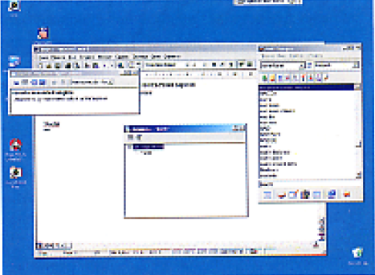
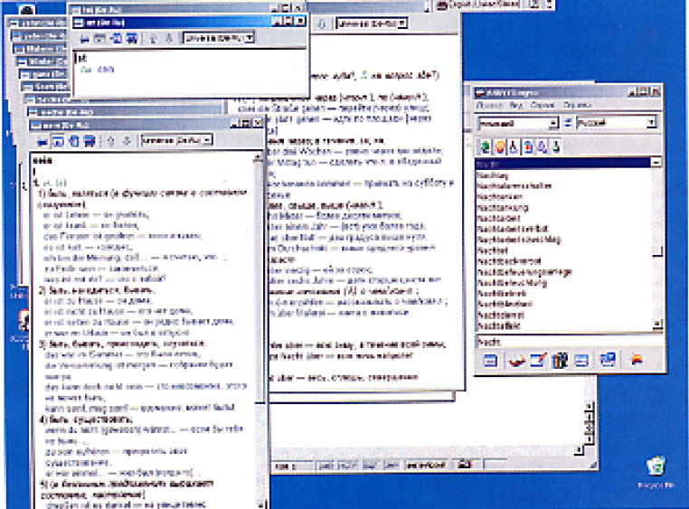

Восьмая версия электронных словарей Lingvo является многоязычной и "знает" четыре европейских языка: английский, немецкий, французский и итальянский. Число словарей для каждого языка различно - например, англо-русских и русско-английских словарей в Lingvo насчитывается 18, а связанных с французским и итальянским языком словарей намного меньше. Общий объем словарной базы Lingvo составляет свыше 2,4 млн словарных статей, распределенных по 41 словарю.
Переводы терминов появляются в отдельных всплывающих окнах
Перевод в Lingvo двунаправленный: с иностранного языка на русский и обратно. Иные схемы перевода, например с английского на немецкий, реализуются только через русский язык - для словарей общей лексики, как правило, такой двухэтапный перевод осуществляется без проблем, но для специальных терминов, например компьютерный тематики, точный перевод возможен не всегда.
Интерфейс новой версии Lingvo практически не изменился. Как и раньше, в главном окне выводятся все известные программе слова, переводы же, вместе с транскрипцией и примерами, отображается в отдельных всплывающих окнах - причем для каждого термина существует свое собственное окно. Незначительное дополнение, которое затронуло окно со списком слов, связано с настройкой направления перевода. Как правило, Lingvo старается самостоятельно определить принадлежность термина, скажем, к английскому или немецкому языку, но эту настройку можно сделать и вручную, выбрав в раскрывающихся списках соответствующие значения. Для пополнения словарей в программу встроен DSL-компьютер, который конвертирует специальные текстовые файлы во внутренний формат Lingvo.
Электронный словарь стартует вместе с Windows и активизируется "горячими" клавишами из любого приложения. В дополнение к этому в Microsoft Word появляется дополнительная панель инструментов, реализующая функцию вызова словаря и поиска перевода выделенного в редактора слова. Прочие нововведения Lingvo 8.0 связаны с дополнительным сервисом: например, реализована сетевая установка программы: слово переводится сразу на несколько языков: поддерживается многоязычный контекстный поиск терминов; кроме того, доступен гипертекстовый справочник по грамматике английского словаря. HS
Lingvo 8.0 позволяет перевести практически любое слово на четыре иностранных языка